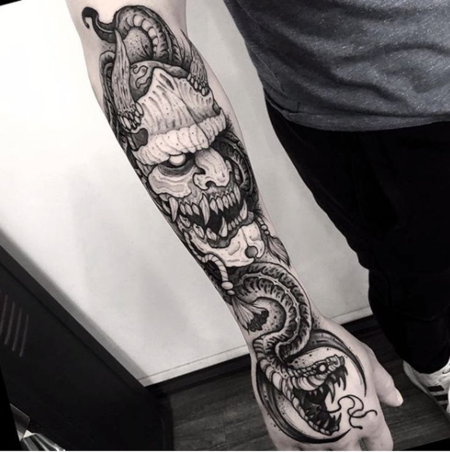
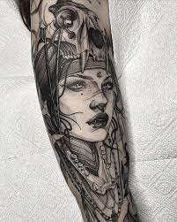
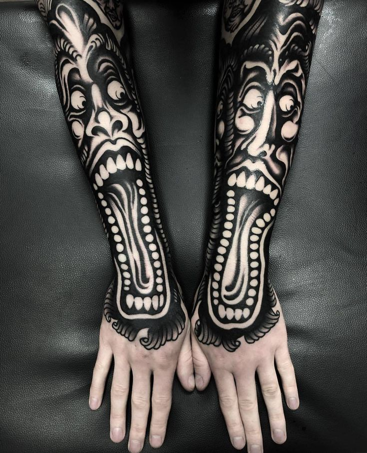
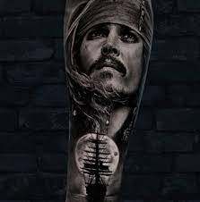
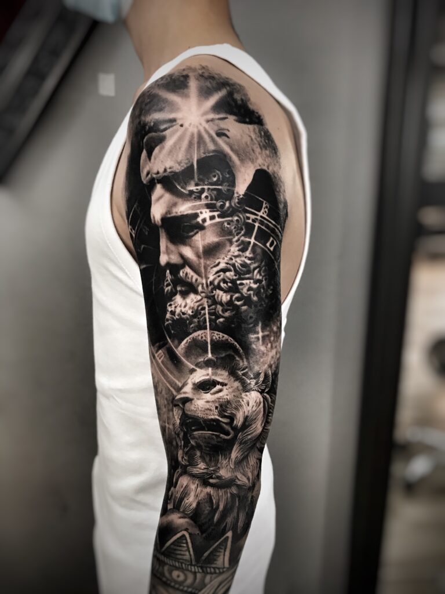
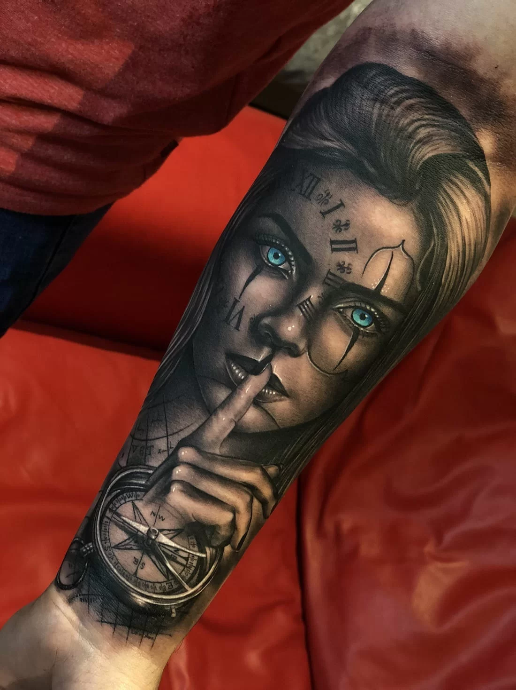

Proyectos de Tatuajes
Explora nuestra colección de proyectos de tatuajes completados y encuentra la inspiración que buscas.
Noizuku

Oni Monster
Tatuaje Realizado a traves de tecnicas tanto blackwork como japonesas para lograr un estilo unico

Neo Tribal
Tatuaje Neo tribal realistas convinando blackwork con realismo moderno

Monster hands
Tatuaje pure de blackwork con tinta negra blackink
Yozuku

Jack Sparrow
Jack Sparrow con tenicas de sombreado de arrastres realista

Hercules
Hercules con tecnica en blanco y negro con luces con tinta blanca

Dead Princess
Cara realista representando a la muerte con tecninca pura de neorealismo